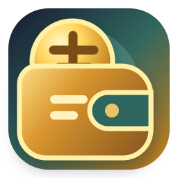

Altın Cüzdan
Kişisel altın ve döviz takibi
Altın Cüzdan; elindeki altınları, dövizi ve nakit TL'yi kaydedip güncel kuyumcu fiyatlarıyla değerini ve kârını görmeni sağlayan kişisel bir uygulamadır. Fiyat geçmişi, alarmlar, satış kayıtları ve yedekleme içerir. İstersen verilerini kendi Google Drive'ında eşitleyerek bilgisayarında ve telefonunda aynı cüzdanı kullanabilirsin.
İndir (Windows / Android)Verilerin sende kalır
Altın Cüzdan'ın bir sunucusu yoktur. Kayıtların cihazında ve — Drive eşitlemesini açarsan — yalnızca senin Google Drive'ındaki, bu uygulamaya özel gizli klasörde saklanır. Ayrıntılar için Gizlilik Politikası.